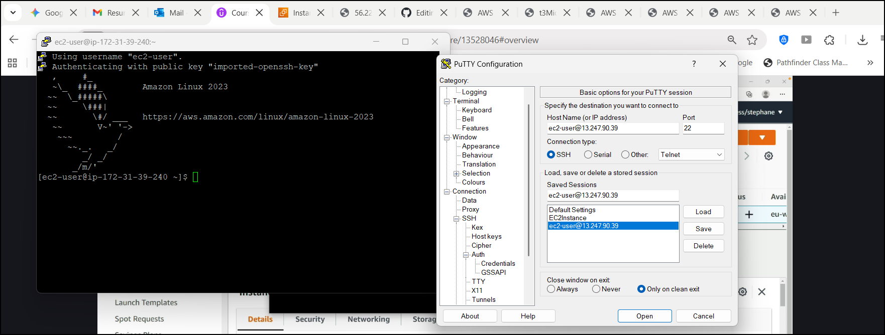

Project Overview
This portfolio project demonstrates my ability to deploy and manage EC2 instances on AWS, covering essential cloud computing concepts and best practices. The project focuses on successfully launching, configuring, and securing a web server using Amazon EC2.
Project Implementation
1. Instance Creation and Configuration
I successfully launched an EC2 instance with the following specifications:
- Instance Name: My First Instance
- AMI: Amazon Linux 2
- Instance Type: t3.micro (free tier eligible)
- Key Pair: Created a new key pair for secure SSH access
- Network Settings: Default VPC with auto-assigned public IP
- User Data: Implemented a bootstrap script to set up a web server
- Access the URL: Navigated to the public IP
User Data Bootstrap Script
#!/bin/bash
# Use this for your user data (script from top to bottom)
# install httpd (Linux 2 version)
yum update -y
yum install -y httpd
systemctl start httpd
systemctl enable httpd
echo "Hello World from $(hostname -f)
" > /var/www/html/index.html
2. Security Implementation
I configured a comprehensive security strategy for the EC2 instance:
Security Groups
- Created a security group with precise inbound rules:
- SSH (Port 22) - For secure administrative access
- HTTP (Port 80) - For web server access
- Implemented best practices by understanding security groups act as a stateful firewall
- Demonstrated troubleshooting skills by identifying security group configuration issues: Removed IPV4 Inbound rule (no more access via port 22)
- I was no longer able to access the URL; It gave me a timeout related error. I was able to successfully access the URL after restoring the rule
SSH Access Methods
- Traditional SSH using key pairs

- PuTTY for Windows-based access
- EC2 Instance Connect for browser-based management
3. IAM Role Implementation
Applied least-privilege security principles by:
- Creating a dedicated IAM role for the EC2 instance: DemoRoleEC2 - with IAMReadOnlyAccess policy
- Attaching the IAMReadOnlyAccess policy to the role
- After removing the role I was no longer able to successfully list IAM users
- Note that removing the IAMReadOnlyAccess permission from the role will yield similar results
IAM Role Policy Example
{
"Version": "2012-10-17",
"Statement": [
{
"Effect": "Allow",
"Action": [
"iam:GenerateCredentialReport",
"iam:GenerateServiceLastAccessedDetails",
"iam:Get*",
"iam:List*",
"iam:SimulateCustomPolicy",
"iam:SimulatePrincipalPolicy"
],
"Resource": "*"
}
]
}
4. Cost Optimization Strategies
Researched and documented multiple AWS cost management strategies:
- On-Demand Instances: Used for variable workloads with no upfront payment
- Reserved Instances: Analyzed for predictable workloads to achieve up to 72% savings
- Spot Instances: Explored for non-critical, flexible applications with potential savings of up to 90%
- Savings Plans: Evaluated as a flexible commitment-based discount model
- Instance Lifecycle Management: Demonstrated starting/stopping instances to control costs
5. System Monitoring and Management
Successfully implemented instance management practices:
- Monitored instance state and health
- Demonstrated proper starting, stopping, and terminating of instances
- Observed behavior of public IP addresses during instance lifecycle
- Verified consistency of private IP addresses through stop/start cycles
Project Outcomes & Learnings
- Successful web server deployment
- Implemented security best practices
- Demonstrated cost efficiency techniques
- Developed troubleshooting skills
- Gained practical AWS service integration experience
Future Enhancements
- Implement EC2 Auto Scaling
- Add Elastic Load Balancing
- Configure custom domain with Route 53
- Implement HTTPS support
- Set up CloudWatch monitoring
- Convert to Infrastructure as Code using CloudFormation
View More Projects